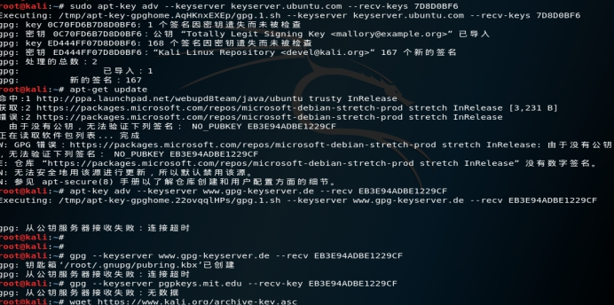

kali在进行apt-get 更新源的时候出现错误，提示由于没有公钥，无法验证下列签名：
如：NO_PUBKEY EB3E94ADBE1229CF
于是百度教程发现基本上没有用
使用命令导入公钥也没有用

都是提示签名因为密钥遗失无法被检查，原因我也不是很清楚，可能是因为太久没有使用导致密钥过期问题，
解决方法:
可以执行命令 apt-key list 查看列表
使用命令完成公钥文件下载 ： wget https://www.kali.org/archive-key.asc
在使用命令：apt-key add archive-key.asc ，添加最新公钥文件
之后再用命令导入公钥，如我的公钥为：
sudo apt-key adv –keyserver keyserver.ubuntu.com –recv-keys EB3E94ADBE1229CF（EB3E94ADBE1229CF为错误提示key）
在执行 apt-get update 就可以了。
详情请查看：https://blog.csdn.net/Secur17y/article/details/79949367